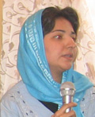

پذيرش > سایت نوشته ها > به جرم چشم پوشی از حقوق گسترده خود، به زندان می روند / جلوه جواهری


 به جرم چشم پوشی از حقوق گسترده خود، به زندان می روند / جلوه جواهری به جرم چشم پوشی از حقوق گسترده خود، به زندان می روند / جلوه جواهری
9 مرداد 1386 - - نسخه قابل چاپ
زنستان: خبر دستگیری امیر یعقوبعلی را شنیدیم در میان بهتِ دستگیری خشونت آمیز شش عضو شورای مرکزی تحکیم وحدت، شش نفری که در اعتراض به برخورد حاکمیت با دانشجویان و در نقد روشنفکری خاموش، تنها با نشستن بر روی زمین، زنگ هوشیاری مان بودند و پیام آور آنکه هنوز هم می توان صدای اعتراض را به گوش های بسته رساند و آنها را وادار به شنیدن کرد.
خبر دستگیری امیر را شنیدیم در فضای ناباوری از هجوم دزدانه به دفتر یک تشکل قانونیِ دانشجویی (ادوار تحکیم وحدت) و بازداشت غیرقانونی اعضای حاضر در آن جا، بدون هیچ اخطار پیشینی.
خبر دستگیری امیر را می شنویم درکنار بهتمان از حکم ناعادلانه دلارام که آن گونه بی رحمانه بر زمین کشیده شد و جبران دست شکسته اش، شلاقی بود که باید بر تنش فرود می آمد. دلارام که تنها برای آنکه انسان به شمار آید و حقوق برابر داشته باشد معترض است و اکنون فقط در گرفتن حکم شلاق و زندان، آدم حسابش می کنند.
خبر دستگیری امیر آمد در میان بهت های برجامانده از احکام سنگینِ وارده بر بدنِ جنبش زنان، احکامی که سعی در خاموش کردن صدایی دارد که دیگر بلند شده است و این بار قصد خاموشی ندارد. چگونه می توانیم خاموشی گزینیم و با این احکام به خانه ها برگردیم زمانی که خانه زندانی دیگر است؟!
خبر دستگیری امیر آمد زمانی که شنیدیم منصور اسانلو را به طرز ابلهانه ای از اتوبوس می ربایند، همانی که هر بار او را برای پاره ای از توضیحات به دادگاه فراخوانده اند، بدون هیچ ترسی به راحتی پیش کسانی رفته که با همه قدرتی که دارند، ترسشان را با ربودن او نشان دادند؛ اسانلویی که هیچ قدرتی ندارد و تنها برای ابتدایی ترین خواسته صنفی خود تلاش می کند.
خبر دستگیری او آمد زمانی که هنوز باور نداشتیم به زندان رفتن بهاره هدایت را، بهاره ای که با مقاومت هر روزه خود سعی در شکستن فضای مردانه سیاسی را دارد و به حق می داند راه آزادی و دموکراسی ایران بدون احقاق حقوق زنان میسر نخواهد شد. بهاره ای که خواسته اش را تا رفتن به درون شورای مرکزی تحکیم وحدت که همیشه در تقسیمی مردانه، نصیب مردان می شد، پیش برد. بهاره ای که به همراه دیگر عدالت خواهان جنبش دانشجویی، توانست نوع تفکر برابرطلبانه خود را ترویج کند و تا جایی پیش رود که این جنبش نه تنها تن به شکستن فضای مردانه خود دهد، بلکه فریاد برابر طلبی سر دهد و به یاری جنبش زنان شتابد. هر چند که هنوز نیز مردانه است اما این بار با نقد درونی خود سعی در فراروی از آن دارد.
خبر دستگیری امیر را در فضایی شنیدیم که قدرت حاکمه دیگر توانایی شنیدن هیچ اعتراضی را ندارد و با ضربه زدن به هر صدایی که بلند می شود سعی در به انزوا کشاندن هر جنبش و حرکتی را دارد.
اما امیر یعقوبعلی، به همراه دیگر پسران حق طلب در کمپین یک میلیون امضا، در همین فضای رعب انگیز و خفقان آور به میان مردم رفتند، در شبی که هنوز گیج بودیم از خبرهای ناباورانه! آنها به میان مردم رفتند و به سادگی از ساده ترین اتفاقات روزمره شان و از نزدیک ترین حوادث زندگی شان گفتند و شنیدند. برای مردم و رهگذران از قوانین و مواردی سخن گفتند که در هر کتابِ قانون و در هر کتاب فروشی قانونی قابل خریداری است! آنها تنها سعی در آگاه کردن مردمی داشتند که به واسطه همین قوانین، زندگی سراسر تبعیض آمیزی را تجربه می کنند، و به آنها گوشزد کردند که تنها شیوه زندگی، پذیرش و کنار آمدن با هر آنچه برسرمان می آید نیست گاهی باید هر چیزی را که احاطه مان کرده است، بارها و بارها بکاویم و از نو بسازیم. برای امیر و دوستانش و برای فعالان دیگر کمپین و برای هر کسی که در فضای خشن این روزها همچنان سعی در زنده نگه داشتن صدای اعتراض خود دارد، جامعه ای که در آن زندگی می کنند هنوز ارزش ساخته شدن دارد، جرم آنها این است!
امیر از جمله مردانی است که به کمپین یک میلیون امضا پیوسته است تا ثابت کند که «مردانگی مردسالارانه» ذاتیِ هیچ انسانی نیست و دنیایِ بناشده بر مردانگی، دنیایی نیست که هیچ انسان آزاده ای در آن بتواند از زندگی عادلانه و انسانی بهره مند شود.
امیر یعقوبعلی یکی از مردانی است که توانسته با نگاه پروسواس خود در ریزترین اموری که احاطه اش کرده اند، مفهوم روشنفکر را بازآفرینی کند، روشنفکری که نگرش انتقادی خود نسبت به جامعه و تردیدش نسبت به دیدگاه های مسلط بر زندگی اجتماعی را به زندگی روزمره اش آورده و همراه با سخن گفتن و ترویج این اندیشه ها فراتر از روشنفکری، دست به روشنگری نیز می زند.
تنها گناه او شک به مناسبات جامعه ای است که فقط و فقط به دلیل مذکر به دنیا آمدن در آن، برای همیشه دوبرابر حقوق را به ارث می برد، ارثی که حتا نمی تواند نسبت به ناعادلانه بودن آن اعتراض کند. امیر و دیگر مردان کمپین یک میلیون امضاء به همراه دیگر مردان برابر طلب در جای جای این سرزمین، سعی در ساخت دنیایی برابر دارند، دنیایی که دیگر هیچ حقوق یک جانبه ای را حتا به نفع خودشان نداشته باشد.
آنها اغلب مورد شماتت قرار می گیرند، جدی گرفته نمی شوند، مسخره می شوند با واژه های سخیفی که معنای جنسیت زده شان نه تنها بر دوش آنها، بلکه بر دوشِ زن، نیز می نشیند، در جامعه ای که ادبیات آن جنسیت زده است و از هر روشنفکری نیز می توانی انتظار شنیدن آنها را داشته باشی. و حالا دیگر این سرزنش ها و طعنه ها با زندگی آنها عجین شده، از خانه های شان تا پای دادگاه و زندان و....
سخت است درک چنین خواسته هایی از سوی دولت _ مردان، برای دارندگان قدرتی که حاضر نیستند لحظه ای حتی به اساسِ قدرتِ خود شک کنند. سخت است درک مردانی چون امیر برای آن دسته از مردان صاحب قدرت و ثروت که جایگاه ناحق خود را پذیرفته اند و به آن می بالند و نمی خواهند از این دنیای نابرابر که یکجانبه از آن نفع می برند دل بکنند. آری بسیار سخت است. برای قاضی درک خواسته های برابر طلبانه امیر سخت است به قدری که ناچار از مادرش چرایی تلاش های امیر برای احقاق حقوق زنان را جویا می شود. و برای مردان نظامی حافظ نظم موجود، تحمل حضور کاوه ها و هومن ها و... در کنارخواسته های برابری طلبانه زنان در روز 8 مارس، تا پای دستگیری و به زندان انداختن آنها سخت است. آری، سخت است. و این حافظان نظم با مسخره کردن مردان حق طلب و متهم کردن شان به سوء استفاده از جمع زنان، تصورشان از زن تنها در مقام ابژه جنسی را بار دیگر به نمایش می گذارند. برای همه آنها که سال ها این گونه بوده اند و زن را تنها یک نماد جنسی دیده اند ، باورکردن آن که کسی از جنس خودشان دیگر گونه بیندیشد، بسیار سخت است.
اما قاضی هم گناهی ندارد چرا که در جامعه ای به قضاوت می نشیند که مردانش زمانی که این قوانین را می نوشتند، گمان می کردند تنها باید حقوق هم منافعان و هم قدرتان خود را در نظر بگیرند. چگونه او می تواند بپذیرد مردی در چنین جامعه ای بیاید و از حقوق و منافع «دیگری» سخن بگوید. برای درک چنین خواسته ای باید ابتدا بتواند جایگاهی که در آن به قضاوت می نشیند را زیر سوال برد، جایگاهی که در آن قرار است بی طرف باشد ولی به واسطه قوانین سراسر یک جانبه به نفع خود، از اساس جانبدارانه است.
با این حال مقاومت ارزشمند امیر و همه مردان برابری خواه، در نقد هر روزه شان بر واقعیت مسلم فرض شده زندگی شان و نقد استوارشان از جایگاه انتسابی خود، سرانجام باور آهنین قاضی را هم خواهد شکست و تا عمق وجود او نیز نفوذ خواهد کرد تا او نیز روزی دیگر به جایگاه انتسابی و جانبدارانه خود شک کند.
و این بار زندان اوین برای نخستین بار میزبان مرد جوانی است که متهم به گذشتن از حقی است که مهمانش آن را ناحق می داند... قدمش مبارک!
سایت زنستان
ارسال به
بالاترین
،
توییتر
،
فریندفید
،
فیسبوک
در همين بخش :
 یک خبر تلخ؟ یک قانونشکنی؟ یک تصمیم بخشنامهای جدید؟ یک خبر تلخ؟ یک قانونشکنی؟ یک تصمیم بخشنامهای جدید؟
چرا بایست به سکسوالیته پرداخت؟ / نفیسه آزاد
آزارجنسی خانگی؛ «قربانی» نه، «نجات یافته»
زنان، بزرگترین بازندگان بهار عرب
سانسور از دیدگاه جنسیتی/الهه امانی
ديگر بخش ها :
طرح یک میلیون امضا
|
مقالات
|
سایت نوشته ها
|
اخبار
|
گزارش كمپين
|
گفت و گو
|
علیه سکوت
|
كوچه به كوچه
|
نامه های شما
|
گزارش ویژه
|
گفتگو با اعضا
|
ویژه سالگرد کمپین
|
تصویر برابری
|
دل آرام علی
|
تریبون
|
مقالات
|
تاریخ شفاهی
|
خارج از چارچوب
|
کتابخانه
|
درباره کمپین
|
کمپین در شهرها
|
کمپین در بند
|
صدای تغییر
|
ویژه 22 خرداد
|
لایحه حمایت از خانواده
|
گالری
|
عشا مومنی
|
امیر یعقوبعلی
|
خدیجه مقدم
|
راحله عسگری زاده و نسیم خسروی
|
پروین اردلان،جلوه جواهری، مریم حسین خواه، ناهید کشاورز
|
زینب پیغمبرزاده
|
سعیده امین، سارا ایمانیان، محبوبه حسین زاده، ناهید کشاورز و همایون نامی
|
احترام شادفر
|
نسیم سرابندی زاده،فاطمه دهدشتی
|
وبلاگ مهمان
|
پرونده خرم آباد
|
دستگیری ها
|
مریم مالک
|
پرستو اللهیاری
|
مهرنوش اعتمادی
|
سمیه رشیدی
|
Other Languages
|
همراهان
|
«فراخوان کمپین ده روز با بهاره هدایت»
| English
|